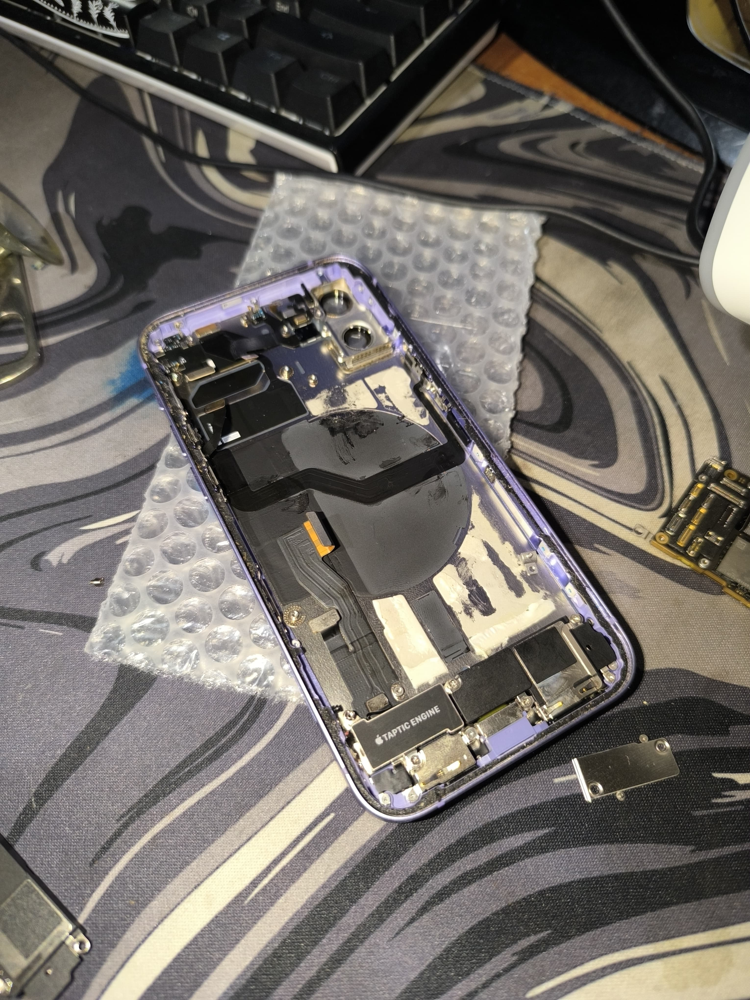
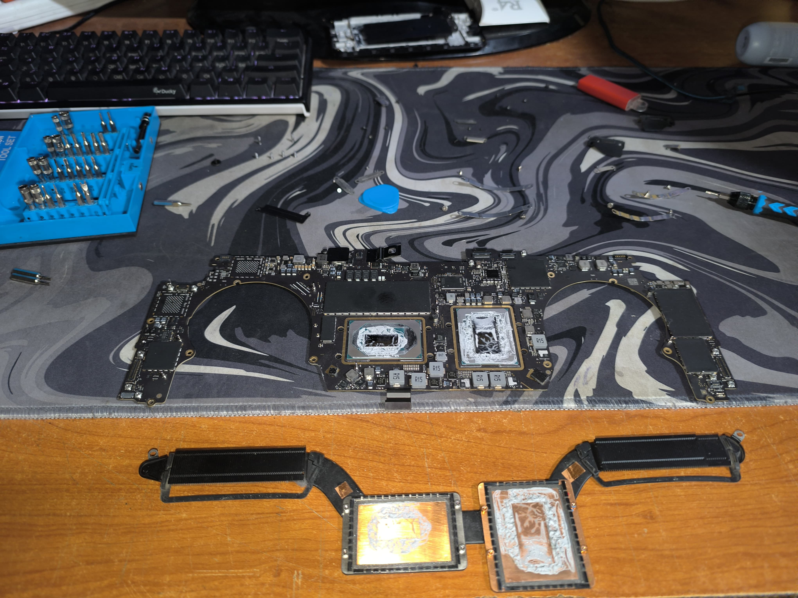
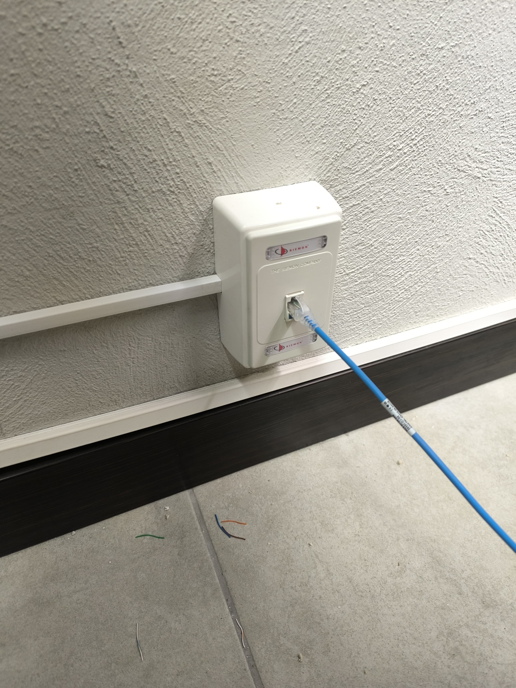
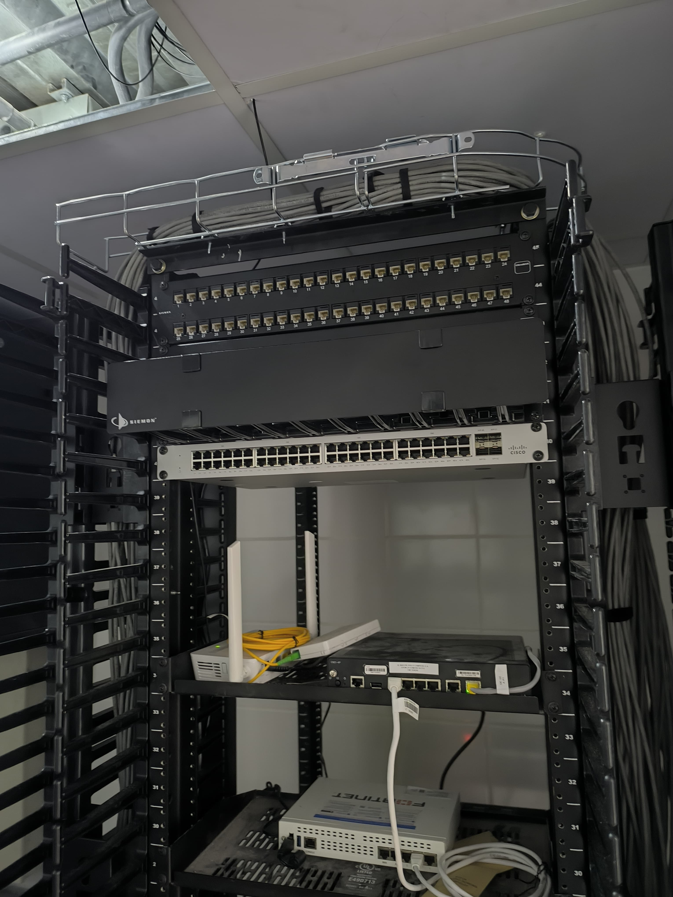
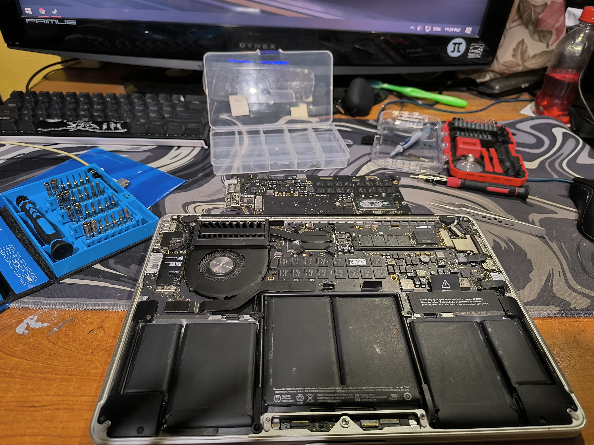
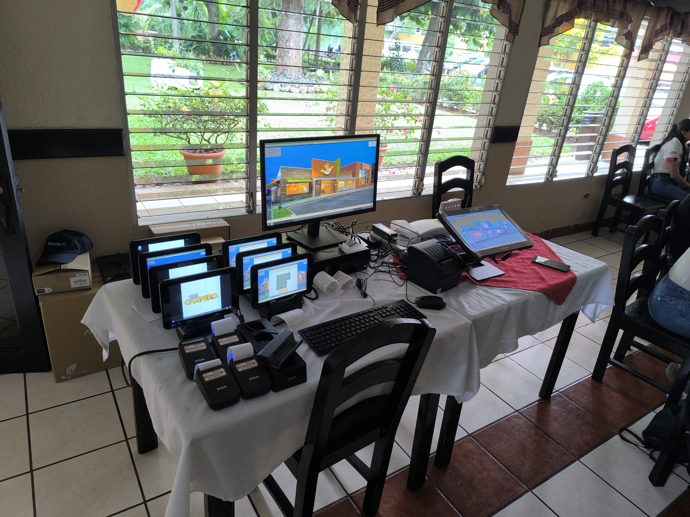

Galería de Trabajos
Aquí encontrarás una colección de mis trabajos técnicos en diferentes áreas de la tecnología.

Reparación de Celulares
Mantenimiento y reparación de dispositivos móviles

Soporte de Computadoras
Instalación de software y hardware

Configuración de Redes
Instalación y mantenimiento de redes locales

Instalación de Equipos
Instalación y configuración de equipos de red

Mantenimiento Preventivo
Limpieza y optimización de equipos

Instalación de Sistemas
Configuración de sistemas